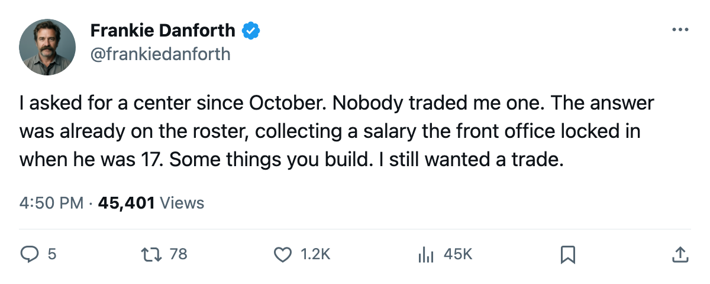

TOR
TORDANFORTH: 33 goals at 19, and the slot I screamed about for 5 months finally has a name in it
The second-centre question went from October through the trade deadline and into the playoffs without a phone call. A kid answered it instead.
 Frankie DanforthColumnist · Queen City Telegram
Frankie DanforthColumnist · Queen City Telegram
I filed my first note about the second-centre problem in December 2004. I wrote that the Leafs carried  Mats Sundin91 at 1C and nobody behind him who could dress in a playoff game and own the ice when the puck sat deep. I wrote that the fourth line was a tax and the second line center was a question mark. I wrote it in January. I wrote it in February. I wrote it the morning of what the calendar had as the trade deadline, when the phone in the front office did not ring.
Mats Sundin91 at 1C and nobody behind him who could dress in a playoff game and own the ice when the puck sat deep. I wrote that the fourth line was a tax and the second line center was a question mark. I wrote it in January. I wrote it in February. I wrote it the morning of what the calendar had as the trade deadline, when the phone in the front office did not ring.
Petr Chlup86 finished the regular season with 33 goals and 59 points in 71 games at 19 years old. He plays 16.9 minutes a night. His salary is $2.34M with 2 years left on the deal. I wanted someone else in December. Nobody was coming. This is who I got, and 59 points at 19 is not nothing.
In these playoffs, Chlup has 1 goal and 1 assist across 2 games, and nobody noticed.  Marian Gaborik98 has 4,
Marian Gaborik98 has 4,  Gary Roberts88 has 4, Mats Sundin has 3. Those are the names in the box score. But the point of my column since October was that the 2C slot needed a body, someone who could carry a line against a rival's top unit. The 19-year-old who finished the season with 59 points and now owns 2 of Toronto's 13 playoff points is the body.
Gary Roberts88 has 4, Mats Sundin has 3. Those are the names in the box score. But the point of my column since October was that the 2C slot needed a body, someone who could carry a line against a rival's top unit. The 19-year-old who finished the season with 59 points and now owns 2 of Toronto's 13 playoff points is the body.
What does this look like when it matters? When the game is 1-1 late in the third, the puck is in the offensive zone, and the coach has to choose who wins the draw behind the net. The answer, through two playoff games, is the kid who signed at $2.34M two years ago.
This doesn't close the book. A 2C who scores 59 points at 19 in 71 games is an extraordinary season and one small sample of a spring. But I wanted a draw-winning centre behind Sundin. I said so until the calendar turned. The calendar turned, the phone stayed quiet, and the kid from the fourth line is sitting 2nd on this team in playoff scoring behind two men who cost 4 times as much.
The Panic Meter is Green, and it should be. But the second-centre question got answered by a development signing, not a trade.
